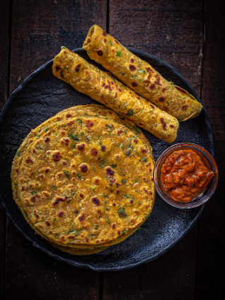

Methi Thepla
Ingredients
- 1 cup whole wheat flour
- 1/2 cup fresh fenugreek leaves (methi), finely chopped
- 1/4 cup yogurt
- 1 tablespoon oil
- 1 teaspoon turmeric powder
- 1 teaspoon red chili powder
- 1 teaspoon cumin seeds
- 1/2 teaspoon carom seeds (ajwain)
- Salt to taste
- Water, as needed for kneading
- Oil or ghee for cooking

Cooking Process
- In a large bowl, combine whole wheat flour, chopped fenugreek leaves, yogurt, oil, turmeric powder, red chili powder, cumin seeds, carom seeds, and salt.
- Mix the ingredients well and add water little by little to knead into a soft dough. Cover the dough and let it rest for 15-20 minutes.
- Divide the dough into small balls. Roll each ball into a thin circle using a rolling pin, dusting with flour as needed to prevent sticking.
- Heat a tawa or skillet over medium heat. Place the rolled thepla on the hot tawa and cook until bubbles appear. Flip and apply oil or ghee on the cooked side.
- Cook the other side until golden brown spots appear. Flip again if needed to ensure even cooking on both sides.
- Repeat the process with the remaining dough balls. Serve the methi thepla hot with yogurt, pickle, or chutney.
Nutritional Information (per serving)
- Calories: 150
- Carbohydrates: 24g
- Protein: 5g
- Fat: 4g
- Fiber: 3g
- Sodium: 220mg
Cooking Tips and Tricks
- To make the theplas softer, add a little extra yogurt while kneading the dough.
- If the fenugreek leaves are bitter, soak them in salted water for 10-15 minutes and drain before using.
- Theplas freeze well! You can store them in an airtight container in the freezer for up to a month. Just heat them on a pan before serving.
- Make sure the tawa is hot enough before placing the thepla on it to ensure even cooking and avoid it turning hard.
- If you want a richer flavor, use ghee instead of oil for cooking the theplas.